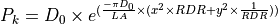

WSF_CARLTON_LETHALITY¶
- weapon_effects WSF_CARLTON_LETHALITY¶
weapon_effects <name> WSF_CARLTON_LETHALITY ... weapon_effects Commands ... ... WSF_EXPLICIT_WEAPON_EFFECTS Commands ... ... WSF_CARLTON_LETHALITY Commands ... end weapon_effects
Overview¶
The Carlton Damage Equation is most often used for indirect fire artillery engagements against fixed ground targets. Down range and cross range miss distances are assumed to occur in a more-or-less horizontal plane containing the target, and the weapon’s velocity vector is used to orient the values in a near-far, right-left direction. Any Z offsets are ignored. Orientation of either the weapon or the target do not matter. This implements the Carlton lethality model as expressed by the equation:

Where:
Input parameter for the weapon/target pair (defined as an input value)
Lethal area for the weapon/target pair (defined as an input value)
Angle of fall of the weapon (relative to horizontal)

Downrange miss distance

Cross range miss distance
Commands¶
Warning
The following weapon_effects commands are not compatible with WSF_CARLTON_LETHALITY. Use of these commands will result in an input processing error.
- d_zero <real-value>¶
The value of in the range [0 .. 1].
Default: 0.5
- lethal_area <target-type> <area-value>¶
Specify the lethal area (LA) for a target of the specified type. This command should be repeated for all target types to which this lethality object will be applicable.
Note
If there is no lethal area defined for the target type, the munition is assumed to have NO effect on the target.